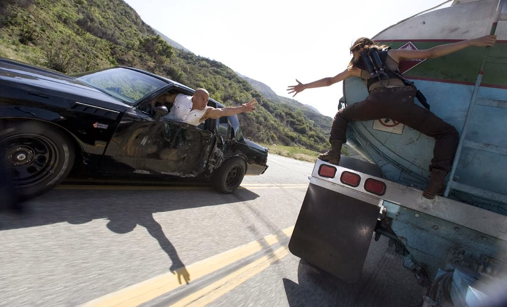
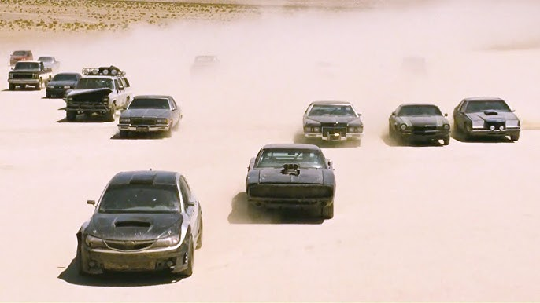
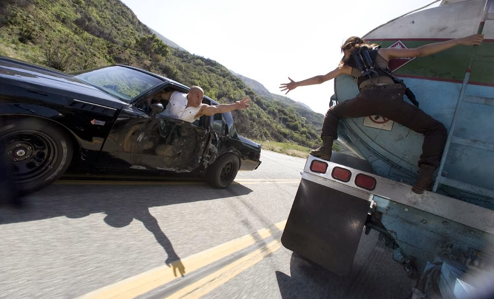
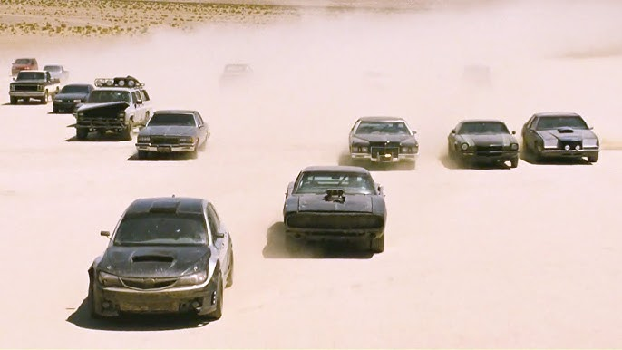

Fast and Furious 4
2009
Fast & Furious 4
Fast & Furious 4, cuyo título oficial es simplemente Fast & Furious (2009). Esta película marcó el regreso de Vin Diesel y Paul Walker como protagonistas principales y dio inicio a la historia más conectada de la franquicia.
Después de los eventos de la primera película, Dominic Toretto y su equipo siguen cometiendo robos en República Dominicana. Sin embargo, Dom se aleja de Letty para protegerla, pero luego descubre que ha sido asesinada. Buscando venganza, regresa a Los Ángeles y se cruza con Brian O’Conner, ahora un agente del FBI, quien también investiga a un narcotraficante llamado Arturo Braga. Ambos terminan infiltrándose en la organización de Braga para atraparlo. Durante la misión, descubren que Letty trabajaba con el FBI para limpiar el nombre de Dom, pero fue asesinada por uno de los sicarios de Braga. Dom y Brian se enfrentan a la organización, logran acabar con los villanos y capturan a Braga. Sin embargo, al final, Dom es arrestado y sentenciado a prisión, aunque su equipo se prepara para rescatarlo en el camino.
 


